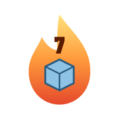
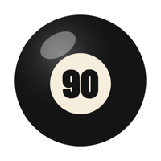
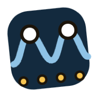
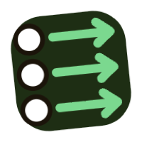
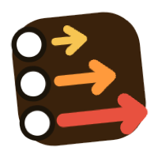

¿Esa tacada salió recta?Tu reloj lo sabe
Ponte el Apple Watch en la mano de tiro y juega como siempre. Después de cada tacada sientes un toque en la muñeca y ahí está el puntaje: ¿se movió la mano de atrás?, ¿aceleraste al pasar por la bola?, ¿aguantaste el final? Nada que ponerle al taco.
Recto · Acelera · Pausa y final
Puntaje de 0 a 100; de 85 para arriba está bien. Cada tacada también trae la velocidad del taco, la fuerza y el ritmo.
Recto
¿Tu mano de atrás se metió o se abrió, o giraste la muñeca, camino a la bola?
Acelera
Al contacto, ¿el taco seguía acelerando o ya venía frenando?
Pausa y final
Una pausa corta atrás y el taco quieto al final
Correa floja, tacada interrumpida, tiro de salto o massé: ves “Sin medir”. Mejor sin puntaje que con uno equivocado


Trabaja lo que más falla
Práctica te sugiere un ejercicio para tu falla más común. El reloj cuenta mientras juegas y te avisa cuando lo superas
- Recto 1010 tacadas seguidas con Recto de 85 o más
 Pausa atrásToques en la muñeca marcan el ritmo; pausa atrás en 8 de 10
Pausa atrásToques en la muñeca marcan el ritmo; pausa atrás en 8 de 10 Bola paradaTacadas suaves y medias; aguanta el final en 8 de 10
Bola paradaTacadas suaves y medias; aguanta el final en 8 de 10
Ritmo10 tacadas con el mismo ritmo
Misma fuerza10 tacadas a la misma velocidad
Escalera de fuerza3 suaves, 3 medias y 3 fuertes, cuando te toque- 10 perfectos10 tacadas seguidas con 85 o más
Ve la falla y corrígela
El taco se mueve con tu muñeca
Abre el iPhone mientras tiras y el taco en pantalla sigue tu muñeca
Demos en 3D, mal y bien
Siete fallas comunes, cada una con demo en cámara lenta, causas comunes y cómo corregirla
Tu progreso mes a mes
Una barra por tacada, tendencias de cada puntaje, y el recorrido y la velocidad de la muñeca en cualquier tacada
Tarjeta con tu puntaje en grande
Una imagen al terminar, para tus amigos o tu entrenador
Practica gratis y luego decides
Tus primeras 3 sesiones o 150 tacadas son gratis, con todo incluido. Después, pagas una vez y es tuyo
- Pago único, sin suscripción
- Sin anuncios
- Sin cuenta; tus datos se quedan en tus dispositivos y en tu iCloud
- Apple Watch Series 6, SE (2.ª generación), Ultra o posterior